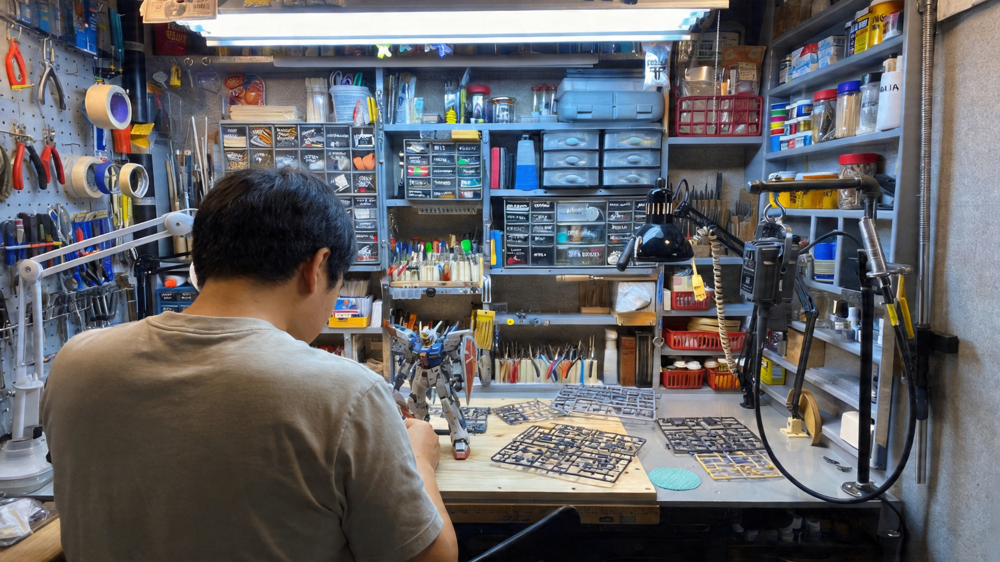
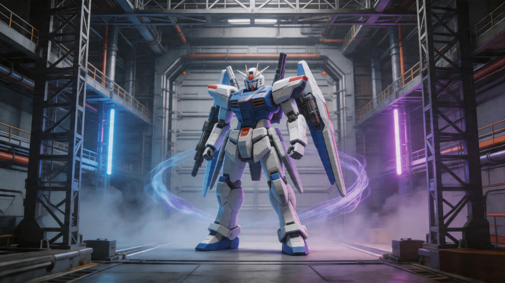
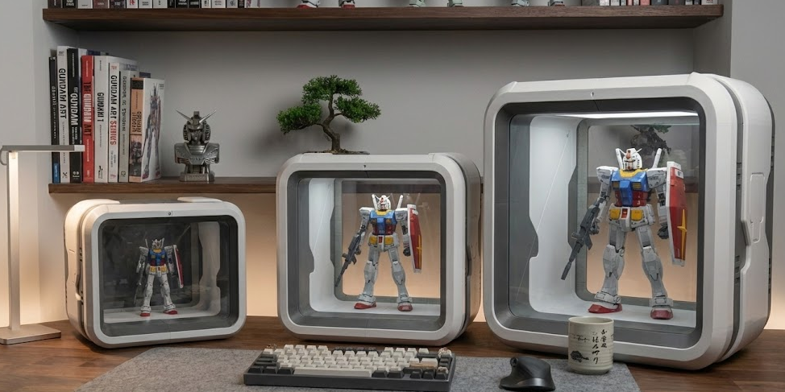
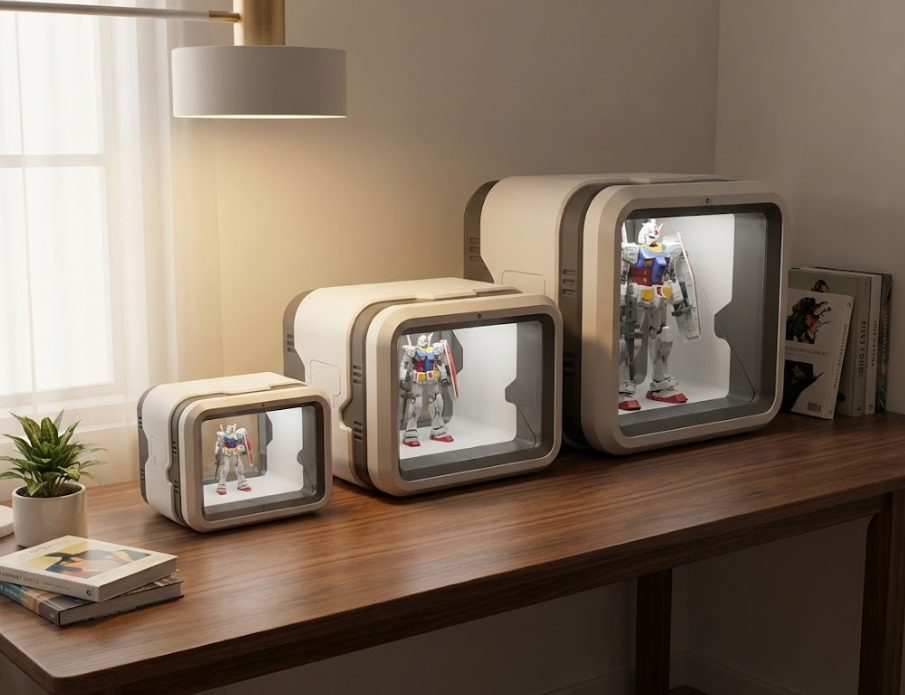
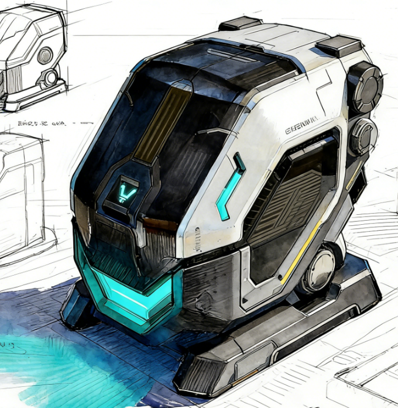

01
Observe观察
Study real desks, tools, photography habits, and long-term preservation problems.从玩家的桌面、工具、摆拍和长期保存问题里寻找真实需求。

Starbox did not begin as a catalog display case. It began with model builders, hardware engineers, and scene designers who shared the same frustration: a serious build should not end as a dusty object.
星匣智创不是从展柜目录里诞生的。它来自一群模型玩家、硬件工程师和场景设计师
对 1:60 机体的同一种不甘心：认真完成的作品，不该只剩落灰。
After sanding, painting, weathering, and hours of adjustment, a model is no longer just an object. It is time made visible. Starbox began with a simple goal: give that time a worthy place to live. 当一台机甲经过打磨、补色、旧化和无数小时的调整后，它已经不是一个普通物件。它是一段投入过的时间。星匣的起点，是把这段时间认真安放起来。

"A model is not a toy. It is a warrior, and every warrior deserves an epic stage."
“模型不是玩具。
它是一个战士，而每一个战士都值得一个史诗级舞台。”
Respect the finished build first, then complete the display through engineering, light, and software. 先尊重玩家的完成品，再用工程、光影和软件把展示体验做完整。
Study real desks, tools, photography habits, and long-term preservation problems.从玩家的桌面、工具、摆拍和长期保存问题里寻找真实需求。
Break shell, window, light, mist, and controls into hardware modules that can be built.把外壳、视窗、灯带、雾化和控制系统拆成可量产的硬件模块。
Use light, fog, background, and scale to place each machine inside a believable scene.用光、雾、背景和比例关系，让每台机体进入自己的场景。
Use AI scene prompts and mobile control so the display system keeps improving.通过 AI 场景提示和移动端控制，让展示系统持续更新。



The Starbox team spans hardware, industrial design, scene art, software, and community operations. Product quality comes from where these disciplines overlap. 星匣团队横跨硬件、工业设计、场景美术、软件和社区运营。真正的产品质量来自这些能力的重叠。
Solve structure, hinge feel, light mounting, and stability for long-term use.从结构强度、开合手感到灯带固定，优先解决长期使用中的稳定性。
Compress museum display, model photography, and animation language into desktop scale.把博物馆陈列、模型摄影和动画场景语言压缩进桌面尺度。
Turn lights, scenes, parameters, and preferences into an upgradeable system.用软件把灯光、场景、参数和用户偏好连接成一个可升级系统。
Let early users shape specs, scene libraries, and display workflows.让早期用户参与产品规格、场景库和展示方式的定义。
If you believe model display deserves to be redefined, join the first tester cohort and co-creation community.如果你也相信模型展示应该被重新定义，欢迎加入首批体验用户和共创社区。